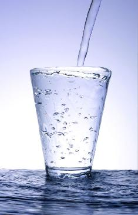

Welcome to vandens
AQUA VILNIUS vandens filtrai - vandens filtras kiekvienam: vandens filtrai namui, geriamo vandens filtrai, vandens filtrai butui
2020.10.27 07:36
Kaip pirkti Apmokėjimas Prekių gražinimas
+370 655 95000 info@aquavilnius.lt
PRISTATYMAS
Visoje Lietuvoje
30 dienų Pinigų
gražinimo garantija
Mokėkite grynais
kai gausite prekes
Prekių nėra Vandens filtrai Toggle navigation Virusų valymas Virusų valymas Ozonas, ozonavimas - vandeniui, orui Virusų valymas - specialūs vandens filtrai Paslaugos Konsultacija vandens kokybės klausimais Vandens kokybės kontrolė Vamzdyno valymo paslaugos Vamzdyno vedžiojimas Vandens kokybės tyrimai Vandens filtrų aptarnavimas Elektros instaliacijos darbai Santechnikos darbai Filtrai Nugeležinimo filtrai Minkštinimo filtrai Minkštinimo - nugeležinimo filtrai Mechaniniai vandens filtrai Anglies filtrai UV filtrai Geriamo vandens sistemos Vandens sistemos AQUA FILTER osmosas Vandens maišytuvai RO Filtrų membranos Vandens jonizatoriai Vandens sistemos AQUA FILTER Vandens sistemos Krausen osmosas Vandens sistemos - įvairūs gamintojai - osmosas Cooler aparatai - osmosas Vandens sistemos Krausen Vandens sistemos su kapiliarine membrana Sistemos geriamojo vandens praturtinimui Vandens filtrų dalys Geriamo vandens sistemų dalys Pramoninių filtrų dalys Talpos druskai ir kitos talpos filtrams Rankinio valdymo vožtuvai Vandens filtrų vožtuvai Clack Corp Vandens filtrų inžektoriai Vandens filtrų aeracija nugeležinime Vandens filtrų įkrovos Vandens filtrų vožtuvai runxin Vandens filtrų kolonos - talpos Vandens filtrų kolonų įdėklai Vandens filtrų vožtuvai LOGIX Pentair Autotrol Vandens filtrų vožtuvai Fleck Baseinų įranga Osmoso sistemos pramonei Vandens tyrimai ir matavimo prietaisai Vandens tyrimai Vandens matavimo prietaisai Elektromagnetiniai nukalkintojai Vandens maišytuvai Keičiamos kasetės Filtrų korpusai Gazavimo aparatai Grohe gazavimo įrenginiai Kiti gazavimo aparatai Angliarūgštė Buteliukai Gazavimo aparatai SODA STREAM Kvapo šalinimo filtrai Organikos filtrai Nitratų filtrai Ozonavimas Prekių katalogas Automatinės vandens tiekimo sistemos (hidroforai) Vandens siurbliai Vandens siurbliai RO Hidroforai šaltam vandeniui Hidroforai karštam vandeniui Oro kompresoriai Dozavimo įranga Nuotekio signalizacijos Giluminiai siurbliai ir varikliai Santechnikos prekės Balansiniai ventiliai Rankiniai ventiliai Automatiniai ventiliai Termostatiniai ventiliai Pradinis Įmonėms Vandens sistemos daugiabučiui Vandens sistemos paskirstymo mazge - miesteliui Įrenginiai pramonei, viešbučiui, gamyklai Geriamasis vanduo Priežiūra Straipsniai Aquafilter privalumai Vandens naudos skaičiuoklės Naujosios technologijos Filmai Tyras vanduo Kitas vandens gerinimas Pirktas vanduo Gręžinio, šaltinio, šulinio vanduo Vandentiekio vanduo Kita Prastos kokybės vanduo Galerija Kontaktai Kontaktai Apie mus Karjera Sertifikatai-padėkos Klientai sužinoti daugiau
Užsiregistruokite konsultacijai vandens kokybės klausimais
Jūsų turimų vandens kokybės rezultatų analizė - parenkami bei rekomenduojami vandens filtrai pagal jūsų poreikius; Vandens filtravimo veikimo principų išaiškinimas, eksploatacijos išaiškinimas;
RegistruotisVandens filtrų skirtumai ir palyginimai
Dažniausiai vanduo nemineralizuojamas, nors pardavėjas deklaruoja, kad vanduo bus mineralizuojamas, dėl to žmogui ima trūkti būtinų mineralinių medžiagų, ko pasekoje turime sveikatos sutrikimų.
StraipsniaiSiūlomi produktai
SUPREME RO vandens valymo sistema
326.23 € 199.00 € 39 %6 valymo etapai su UF ir osmoso sistema EXCITO L-UF
570.00 € 399.00 € 30 %Naujausi produktai
Jonizatorius oro gaiviklis AVICHE M1
165.00 €AXAL Pro minkštinimo druska vandens filtrams (pristatymas visoje LIETUVOJE)
12.99 €Maišelis BFNT filtrui
26.50 €SSF-0530 kasečių komplektas
45.00 €SSF-0520 kasečių komplektas
33.00 €Top 10 prekių
Spaustukas jungtims
0.30 €Prailgintojas
1.23 € 0.86 € 30 %Vandens sistemos vamzdelis
0.64 €Laikiklis JACO perėjimo
1.00 €FCCFE serija - kasetės su nugeležinimo funkcija
14.50 €SIŪLOMI PRODUKTAI
SUPREME RO vandens valymo sistema 199.00 € 6 valymo etapai su UF ir osmoso sistema EXCITO L-UF 399.00 €
Rekomenduojami produktai
Minkštinimo ir nugeležinimo filtrai visam namui REKOMENDUOJAME 414.00 € Nugeležinimo filtrai su oru 560.00 € Mechaniniai filtrai praplaunami FHMB REKOMENDUOJAME 38.00 € Minkštinimo filtrai visam namui REKOMENDUOJAME 414.00 € Visi produktai Pirkite internetu
100% saugus apsipirkimas
Klauskite
Klauskite
Form by ChronoForms - ChronoEngine.comUAB "AQUA VILNIUS"
Ukmergės g. 120 (A korpusas, Microsoft pastatas 1 aukštas), Vilnius
Mob.: +370 655 95000
Tel.: 8 5 205 3000
Nugeležinimo filtrai Minkštinimo filtrai Minkštinimo - nugeležinimo filtrai Mechaniniai vandens filtrai Anglies filtrai UV filtrai Geriamo vandens sistemos Vandens filtrų dalys Baseinų įranga Osmoso sistemos pramonei Vandens tyrimai ir matavimo prietaisai Elektromagnetiniai nukalkintojai Vandens maišytuvai Keičiamos kasetės Filtrų korpusai Gazavimo aparatai Kvapo šalinimo filtrai Organikos filtrai Nitratų filtrai Ozonavimas
© 2008 - 2019 AQUA VILNIUS. Visos teisės saugomos. Atsakomybės apribojimas
